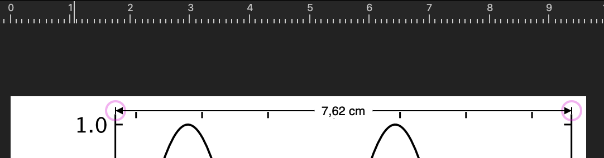

This page was generated from notebooks/L2/25_publication_ready_figures.ipynb.


Add On: Making publication ready figures#
In this short text I will try to put some guidelines of how to generate plots with an appropriate size, such that you can use the examples right away in your Jupyter notebook.
You would like to assemble your Figures in a manuscript from plots that you generate as PDF files, i.e.they contain vector graphics. This has the advantage that you can scale them to the appropriate size afterwards such to squeeze them in on-column or two-column Figures. While this is tempting, it is carrying the danger that you scale each plot differently and then all plots have different axis label sizes and tick sizes, which finally creates a mess.
To prevent that, one could readily start creating the plots in the appropriate size of on-column or two column use with all the same axis and tick label sizes. Here are some hacks, that allow you to create and save production ready plots directly from your Jupyter notebooks.
Creating a plot with a specific bounding box size#
If you create a plot in matplotlib you can specify a size with the parameter figsize, e.g.
plt.figure(figsize=(3,2))
for a figure of a width of 3 inches or 7.62 cm and a height of 2 inches (5.08 cm). If you do not use this parameter or if you even do not use the plt.figure() command, matplotlib will use the default size, which is often 8 inches times 6 inches. The default size is way to big as the figure would be then just a whole A4 page wide. A proper size of a plot for a single column in a two column paper would be the above 3 inches times 2 inches as a the whole paper width is 21 cm
minus a marging of about 3 cm on each side gives a column width of about (21-6)/2=7.5 cm.
The Plot shown in Figure @fig-1 is created with the following commands
plt.figure(figsize=(3,2), dpi=150)
x=np.linspace(0,np.pi*4,200)
plt.plot(x,np.sin(x),color='k')
plt.xlabel(r"angle $\theta$ in [rad]")
plt.ylabel(r"$\sin(\theta)$")
plt.savefig("figure_example.pdf",
bbox_inches = 'tight')
plt.show()
The resulting PDF file contains a plot that has a bounding box, that is exactly 3 inches times 2 inches. So if you insert the plot in any drawing program like Adobe Illustrator, Affinity Designer or even into text processing software like Word or Pages, the bounding box of this plot, will exactly be of this size and you can arrange additional graphs to form a whole figure easily without rescaling thing. If you use the plot in \LaTeX `manuscript, which is two-column it can be used without scaling, i.e. by `includegraphics{Figure 1.pdf}``to show up in the appropriate size over one column.
There are a few more things to realize.
While the bounding box of this figure is of this size, the axis box is smaller and often there is a certain empty space on the left/bottom side between the axis labels and the edge of the bounding box. That very much depends on you specific plot. We will address how to create a figure with a fixed axis frame size in the second section.
The font size on the axis is now 10 or 11 pts, which matches the font size of most documents you creating using this figure. I used the following plt.rcParams: ‘axes.labelsize’: 11, ‘xtick.labelsize’ : 10, ‘ytick.labelsize’ : 10 for the shown plot.
You will also realize that working with this figure size is not good in a Jupyter notebook. This has to do with how the Jupyter translates the output into the PNG file that is displayed inline. A way to enlarge the plot in the Jupyter notebook but keep its PDF size is to increase the dpi parameter in the
plt.figure(figsize=(3,2), dpi=150)command. It is typically set to dpi=75, which is now way to small. A setting dpi=150 seems a reasonable compromise between on-screen and print size. If you want to be completely independentThe
plt.savefigcommand uses and additionalbbox_inches = 'tight'parameter, which ensures that the bounding box is really enclosing all plot components accurately.
[67]:
import matplotlib as mpl
import matplotlib.font_manager as font_manager
from IPython.core.display import HTML
import matplotlib.pyplot as plt
import numpy as np
[68]:
plt.rcParams.update({'font.size': 12,
'lines.linewidth': 1,
'lines.markersize': 10,
'axes.labelsize': 11,
'xtick.labelsize' : 10,
'ytick.labelsize' : 10,
'xtick.top' : True,
'xtick.direction' : 'in',
'ytick.right' : True,
'ytick.direction' : 'in',})
%config InlineBackend.figure_format = 'retina'
[74]:
pwd
[74]:
'/home/lectures/CompSoft23/source/notebooks/L2'
[76]:
def get_size(w,h):
return((w/2.54,h/2.54))
[77]:
plt.figure(figsize=get_size(8,6),dpi=150)
x=np.linspace(0,np.pi*4,200)
plt.plot(x,np.sin(x),color='k')
plt.xlabel(r"angle $\theta$ in [rad]")
plt.ylabel(r"$\sin(\theta)$")
plt.savefig("figure_example1.pdf",bbox_inches = 'tight')
plt.show()
Loading this figure into any software will result in a Figure with a size corresponding to the adjusted width.

Creating a plot with a specific axis frame size#
The axis frame is the box of the frame providing the axes. When creating a figure with the plt.figure() command the axis frame is calculated by matplotlib to be inside the bounding box specified by the figsize, such that all axis annotations fit inside as well. The axis frame is therefore smaller than the specified bounding box and often depends on the axis labels and additional things. If you want to create a plot with a fixed size of the axis frame, it is useful to add a function to
your code that sets this size of the axis frame. This function could be
def set_size(w,h, ax=None):
""" w, h: width, height in inches """
if not ax: ax=plt.gca()
l = ax.figure.subplotpars.left
r = ax.figure.subplotpars.right
t = ax.figure.subplotpars.top
b = ax.figure.subplotpars.bottom
figw = float(w)/(r-l)
figh = float(h)/(t-b)
ax.figure.set_size_inches(figw, figh)
where you have to specify the desired width and height (in inches) of the current axis ax. The function does not return anything but sets directly the size.
[78]:
def set_size(w,h, ax=None):
""" w, h: width, height in inches """
if not ax: ax=plt.gca()
l = ax.figure.subplotpars.left
r = ax.figure.subplotpars.right
t = ax.figure.subplotpars.top
b = ax.figure.subplotpars.bottom
figw = float(w)/(r-l)
figh = float(h)/(t-b)
ax.figure.set_size_inches(figw, figh)
fig=plt.figure(dpi=150)
ax=plt.axes()
ax.plot(x,np.sin(x),color='k')
ax.set_xlabel(r"angle $\theta$ in [rad]")
ax.set_ylabel(r"$\sin(\theta)$")
set_size(3,2)
plt.savefig("figure_example2.pdf",bbox_inches = 'tight')
plt.show()
If you load this Figure into a graphics software or text processing software, the Figure box, should have a dimension of 7.62 cm times 5.08 cm, without any rescaling:
Choosing fonts#
Matplotlib can access a number of different fonts. Finding the appropriate one to match formula style of your document or publication can be difficult. A list of fonts available to matplotlib can be obtained with the following code snippet, which I found here.
[60]:
def make_html(fontname):
return "<p>{font}: <span style='font-family:{font}; font-size: 24px;'>{font}</p>".format(font=fontname)
code = "\n".join([make_html(font) for font in sorted(set([f.name for f in font_manager.fontManager.ttflist]))])
HTML("<div style='column-count: 2;'>{}</div>".format(code))
[60]:
AR PL KaitiM Big5: AR PL KaitiM Big5
AR PL KaitiM GB: AR PL KaitiM GB
AR PL Mingti2L Big5: AR PL Mingti2L Big5
AR PL SungtiL GB: AR PL SungtiL GB
Abyssinica SIL: Abyssinica SIL
Accanthis ADF Std: Accanthis ADF Std
Accanthis ADF Std No2: Accanthis ADF Std No2
Accanthis ADF Std No3: Accanthis ADF Std No3
Amiri: Amiri
Amiri Quran: Amiri Quran
Amiri Quran Colored: Amiri Quran Colored
Ani: Ani
AnjaliOldLipi: AnjaliOldLipi
Arimo: Arimo
Asana Math: Asana Math
Baekmuk Batang: Baekmuk Batang
Baekmuk Dotum: Baekmuk Dotum
Baekmuk Gulim: Baekmuk Gulim
Baekmuk Headline: Baekmuk Headline
Berenis ADF Pro: Berenis ADF Pro
Berenis ADF Pro Math: Berenis ADF Pro Math
C059: C059
Cabin: Cabin
Caladea: Caladea
Cantarell: Cantarell
Carlito: Carlito
Chandas: Chandas
Chilanka: Chilanka
Comfortaa: Comfortaa
Cousine: Cousine
D050000L: D050000L
DejaVu Math TeX Gyre: DejaVu Math TeX Gyre
DejaVu Sans: DejaVu Sans
DejaVu Sans Display: DejaVu Sans Display
DejaVu Sans Mono: DejaVu Sans Mono
DejaVu Serif: DejaVu Serif
DejaVu Serif Display: DejaVu Serif Display
Droid Sans Fallback: Droid Sans Fallback
Dyuthi: Dyuthi
EB Garamond: EB Garamond
EB Garamond 12 All SC: EB Garamond 12 All SC
EB Garamond Initials: EB Garamond Initials
EB Garamond Initials Fill1: EB Garamond Initials Fill1
EB Garamond Initials Fill2: EB Garamond Initials Fill2
EB Garamond SC: EB Garamond SC
FontAwesome: FontAwesome
FoulisGreek: FoulisGreek
FreeMono: FreeMono
FreeSans: FreeSans
FreeSerif: FreeSerif
GFS Artemisia: GFS Artemisia
GFS Baskerville: GFS Baskerville
GFS BodoniClassic: GFS BodoniClassic
GFS Complutum: GFS Complutum
GFS Didot: GFS Didot
GFS Didot Classic: GFS Didot Classic
GFS Gazis: GFS Gazis
GFS Neohellenic: GFS Neohellenic
GFS Olga: GFS Olga
GFS Porson: GFS Porson
GFS Solomos: GFS Solomos
GFS Theokritos: GFS Theokritos
Gargi: Gargi
Garuda: Garuda
Gayathri: Gayathri
Gentium: Gentium
Gentium Basic: Gentium Basic
Gentium Book Basic: Gentium Book Basic
Gentium Plus: Gentium Plus
Gentium Plus Compact: Gentium Plus Compact
GentiumAlt: GentiumAlt
Gillius ADF: Gillius ADF
Gillius ADF No2: Gillius ADF No2
Go: Go
Go Medium: Go Medium
Go Mono: Go Mono
Go Smallcaps: Go Smallcaps
Gubbi: Gubbi
IPAGothic: IPAGothic
IPAMincho: IPAMincho
IPAPGothic: IPAPGothic
IPAPMincho: IPAPMincho
IPAexGothic: IPAexGothic
IPAexMincho: IPAexMincho
Jamrul: Jamrul
Junicode: Junicode
KacstArt: KacstArt
KacstBook: KacstBook
KacstDecorative: KacstDecorative
KacstDigital: KacstDigital
KacstFarsi: KacstFarsi
KacstLetter: KacstLetter
KacstNaskh: KacstNaskh
KacstOffice: KacstOffice
KacstOne: KacstOne
KacstPen: KacstPen
KacstPoster: KacstPoster
KacstQurn: KacstQurn
KacstScreen: KacstScreen
KacstTitle: KacstTitle
KacstTitleL: KacstTitleL
Kalapi: Kalapi
Kalimati: Kalimati
Karumbi: Karumbi
Keraleeyam: Keraleeyam
Khmer OS: Khmer OS
Khmer OS System: Khmer OS System
Kinnari: Kinnari
LKLUG: LKLUG
Laksaman: Laksaman
Latin Modern Math: Latin Modern Math
Latin Modern Mono: Latin Modern Mono
Latin Modern Mono Caps: Latin Modern Mono Caps
Latin Modern Mono Light: Latin Modern Mono Light
Latin Modern Mono Light Cond: Latin Modern Mono Light Cond
Latin Modern Mono Prop: Latin Modern Mono Prop
Latin Modern Mono Prop Light: Latin Modern Mono Prop Light
Latin Modern Mono Slanted: Latin Modern Mono Slanted
Latin Modern Roman: Latin Modern Roman
Latin Modern Roman Caps: Latin Modern Roman Caps
Latin Modern Roman Demi: Latin Modern Roman Demi
Latin Modern Roman Dunhill: Latin Modern Roman Dunhill
Latin Modern Roman Slanted: Latin Modern Roman Slanted
Latin Modern Roman Unslanted: Latin Modern Roman Unslanted
Latin Modern Sans: Latin Modern Sans
Latin Modern Sans Demi Cond: Latin Modern Sans Demi Cond
Latin Modern Sans Quotation: Latin Modern Sans Quotation
Lato: Lato
Liberation Mono: Liberation Mono
Liberation Sans: Liberation Sans
Liberation Sans Narrow: Liberation Sans Narrow
Liberation Serif: Liberation Serif
Likhan: Likhan
Linux Biolinum Keyboard O: Linux Biolinum Keyboard O
Linux Biolinum O: Linux Biolinum O
Linux Libertine Display O: Linux Libertine Display O
Linux Libertine Initials O: Linux Libertine Initials O
Linux Libertine Mono O: Linux Libertine Mono O
Linux Libertine O: Linux Libertine O
Lobster Two: Lobster Two
Lohit Assamese: Lohit Assamese
Lohit Bengali: Lohit Bengali
Lohit Devanagari: Lohit Devanagari
Lohit Gujarati: Lohit Gujarati
Lohit Gurmukhi: Lohit Gurmukhi
Lohit Kannada: Lohit Kannada
Lohit Malayalam: Lohit Malayalam
Lohit Odia: Lohit Odia
Lohit Tamil: Lohit Tamil
Lohit Tamil Classical: Lohit Tamil Classical
Lohit Telugu: Lohit Telugu
Loma: Loma
Manjari: Manjari
Meera: Meera
Mitra Mono: Mitra Mono
Mukti Narrow: Mukti Narrow
Nakula: Nakula
Navilu: Navilu
Nimbus Mono PS: Nimbus Mono PS
Nimbus Roman: Nimbus Roman
Nimbus Sans: Nimbus Sans
Nimbus Sans Narrow: Nimbus Sans Narrow
Norasi: Norasi
Noto Kufi Arabic: Noto Kufi Arabic
Noto Mono: Noto Mono
Noto Music: Noto Music
Noto Naskh Arabic: Noto Naskh Arabic
Noto Nastaliq Urdu: Noto Nastaliq Urdu
Noto Sans: Noto Sans
Noto Sans Adlam: Noto Sans Adlam
Noto Sans Adlam Unjoined: Noto Sans Adlam Unjoined
Noto Sans Anatolian Hieroglyphs: Noto Sans Anatolian Hieroglyphs
Noto Sans Arabic: Noto Sans Arabic
Noto Sans Armenian: Noto Sans Armenian
Noto Sans Avestan: Noto Sans Avestan
Noto Sans Bamum: Noto Sans Bamum
Noto Sans Bassa Vah: Noto Sans Bassa Vah
Noto Sans Batak: Noto Sans Batak
Noto Sans Bengali: Noto Sans Bengali
Noto Sans Bhaiksuki: Noto Sans Bhaiksuki
Noto Sans Brahmi: Noto Sans Brahmi
Noto Sans Buginese: Noto Sans Buginese
Noto Sans Buhid: Noto Sans Buhid
Noto Sans CJK JP: Noto Sans CJK JP
Noto Sans Canadian Aboriginal: Noto Sans Canadian Aboriginal
Noto Sans Carian: Noto Sans Carian
Noto Sans Caucasian Albanian: Noto Sans Caucasian Albanian
Noto Sans Chakma: Noto Sans Chakma
Noto Sans Cham: Noto Sans Cham
Noto Sans Cherokee: Noto Sans Cherokee
Noto Sans Coptic: Noto Sans Coptic
Noto Sans Cuneiform: Noto Sans Cuneiform
Noto Sans Cypriot: Noto Sans Cypriot
Noto Sans Deseret: Noto Sans Deseret
Noto Sans Devanagari: Noto Sans Devanagari
Noto Sans Display: Noto Sans Display
Noto Sans Duployan: Noto Sans Duployan
Noto Sans Egyptian Hieroglyphs: Noto Sans Egyptian Hieroglyphs
Noto Sans Elbasan: Noto Sans Elbasan
Noto Sans Ethiopic: Noto Sans Ethiopic
Noto Sans Georgian: Noto Sans Georgian
Noto Sans Glagolitic: Noto Sans Glagolitic
Noto Sans Gothic: Noto Sans Gothic
Noto Sans Grantha: Noto Sans Grantha
Noto Sans Gujarati: Noto Sans Gujarati
Noto Sans Gurmukhi: Noto Sans Gurmukhi
Noto Sans Hanifi Rohingya: Noto Sans Hanifi Rohingya
Noto Sans Hanunoo: Noto Sans Hanunoo
Noto Sans Hatran: Noto Sans Hatran
Noto Sans Hebrew: Noto Sans Hebrew
Noto Sans Imperial Aramaic: Noto Sans Imperial Aramaic
Noto Sans Indic Siyaq Numbers: Noto Sans Indic Siyaq Numbers
Noto Sans Inscriptional Pahlavi: Noto Sans Inscriptional Pahlavi
Noto Sans Inscriptional Parthian: Noto Sans Inscriptional Parthian
Noto Sans Javanese: Noto Sans Javanese
Noto Sans Kaithi: Noto Sans Kaithi
Noto Sans Kannada: Noto Sans Kannada
Noto Sans Kayah Li: Noto Sans Kayah Li
Noto Sans Kharoshthi: Noto Sans Kharoshthi
Noto Sans Khmer: Noto Sans Khmer
Noto Sans Khojki: Noto Sans Khojki
Noto Sans Khudawadi: Noto Sans Khudawadi
Noto Sans Lao: Noto Sans Lao
Noto Sans Lepcha: Noto Sans Lepcha
Noto Sans Limbu: Noto Sans Limbu
Noto Sans Linear A: Noto Sans Linear A
Noto Sans Linear B: Noto Sans Linear B
Noto Sans Lisu: Noto Sans Lisu
Noto Sans Lycian: Noto Sans Lycian
Noto Sans Lydian: Noto Sans Lydian
Noto Sans Mahajani: Noto Sans Mahajani
Noto Sans Malayalam: Noto Sans Malayalam
Noto Sans Mandaic: Noto Sans Mandaic
Noto Sans Manichaean: Noto Sans Manichaean
Noto Sans Marchen: Noto Sans Marchen
Noto Sans Math: Noto Sans Math
Noto Sans Mayan Numerals: Noto Sans Mayan Numerals
Noto Sans Meetei Mayek: Noto Sans Meetei Mayek
Noto Sans Mende Kikakui: Noto Sans Mende Kikakui
Noto Sans Meroitic: Noto Sans Meroitic
Noto Sans Miao: Noto Sans Miao
Noto Sans Modi: Noto Sans Modi
Noto Sans Mongolian: Noto Sans Mongolian
Noto Sans Mono: Noto Sans Mono
Noto Sans Mro: Noto Sans Mro
Noto Sans Multani: Noto Sans Multani
Noto Sans Myanmar: Noto Sans Myanmar
Noto Sans NKo: Noto Sans NKo
Noto Sans Nabataean: Noto Sans Nabataean
Noto Sans New Tai Lue: Noto Sans New Tai Lue
Noto Sans Newa: Noto Sans Newa
Noto Sans Ogham: Noto Sans Ogham
Noto Sans Ol Chiki: Noto Sans Ol Chiki
Noto Sans Old Hungarian: Noto Sans Old Hungarian
Noto Sans Old Italic: Noto Sans Old Italic
Noto Sans Old North Arabian: Noto Sans Old North Arabian
Noto Sans Old Permic: Noto Sans Old Permic
Noto Sans Old Persian: Noto Sans Old Persian
Noto Sans Old Sogdian: Noto Sans Old Sogdian
Noto Sans Old South Arabian: Noto Sans Old South Arabian
Noto Sans Old Turkic: Noto Sans Old Turkic
Noto Sans Oriya: Noto Sans Oriya
Noto Sans Osage: Noto Sans Osage
Noto Sans Osmanya: Noto Sans Osmanya
Noto Sans Pahawh Hmong: Noto Sans Pahawh Hmong
Noto Sans Palmyrene: Noto Sans Palmyrene
Noto Sans Pau Cin Hau: Noto Sans Pau Cin Hau
Noto Sans PhagsPa: Noto Sans PhagsPa
Noto Sans Phoenician: Noto Sans Phoenician
Noto Sans Psalter Pahlavi: Noto Sans Psalter Pahlavi
Noto Sans Rejang: Noto Sans Rejang
Noto Sans Runic: Noto Sans Runic
Noto Sans Samaritan: Noto Sans Samaritan
Noto Sans Saurashtra: Noto Sans Saurashtra
Noto Sans Sharada: Noto Sans Sharada
Noto Sans Shavian: Noto Sans Shavian
Noto Sans Siddham: Noto Sans Siddham
Noto Sans Sinhala: Noto Sans Sinhala
Noto Sans Sora Sompeng: Noto Sans Sora Sompeng
Noto Sans Sundanese: Noto Sans Sundanese
Noto Sans Syloti Nagri: Noto Sans Syloti Nagri
Noto Sans Symbols: Noto Sans Symbols
Noto Sans Symbols2: Noto Sans Symbols2
Noto Sans Syriac: Noto Sans Syriac
Noto Sans Tagalog: Noto Sans Tagalog
Noto Sans Tagbanwa: Noto Sans Tagbanwa
Noto Sans Tai Le: Noto Sans Tai Le
Noto Sans Tai Tham: Noto Sans Tai Tham
Noto Sans Tai Viet: Noto Sans Tai Viet
Noto Sans Takri: Noto Sans Takri
Noto Sans Tamil: Noto Sans Tamil
Noto Sans Tamil Supplement: Noto Sans Tamil Supplement
Noto Sans Telugu: Noto Sans Telugu
Noto Sans Thaana: Noto Sans Thaana
Noto Sans Thai: Noto Sans Thai
Noto Sans Tibetan: Noto Sans Tibetan
Noto Sans Tifinagh: Noto Sans Tifinagh
Noto Sans Tirhuta: Noto Sans Tirhuta
Noto Sans Ugaritic: Noto Sans Ugaritic
Noto Sans Vai: Noto Sans Vai
Noto Sans Warang Citi: Noto Sans Warang Citi
Noto Sans Yi: Noto Sans Yi
Noto Serif: Noto Serif
Noto Serif Ahom: Noto Serif Ahom
Noto Serif Armenian: Noto Serif Armenian
Noto Serif Balinese: Noto Serif Balinese
Noto Serif Bengali: Noto Serif Bengali
Noto Serif CJK JP: Noto Serif CJK JP
Noto Serif Devanagari: Noto Serif Devanagari
Noto Serif Display: Noto Serif Display
Noto Serif Dogra: Noto Serif Dogra
Noto Serif Ethiopic: Noto Serif Ethiopic
Noto Serif Georgian: Noto Serif Georgian
Noto Serif Gujarati: Noto Serif Gujarati
Noto Serif Gurmukhi: Noto Serif Gurmukhi
Noto Serif Hebrew: Noto Serif Hebrew
Noto Serif Kannada: Noto Serif Kannada
Noto Serif Khmer: Noto Serif Khmer
Noto Serif Lao: Noto Serif Lao
Noto Serif Malayalam: Noto Serif Malayalam
Noto Serif Myanmar: Noto Serif Myanmar
Noto Serif Sinhala: Noto Serif Sinhala
Noto Serif Tamil: Noto Serif Tamil
Noto Serif Tamil Slanted: Noto Serif Tamil Slanted
Noto Serif Tangut: Noto Serif Tangut
Noto Serif Telugu: Noto Serif Telugu
Noto Serif Thai: Noto Serif Thai
Noto Serif Tibetan: Noto Serif Tibetan
Open Sans: Open Sans
Open Sans Condensed: Open Sans Condensed
OpenSymbol: OpenSymbol
P052: P052
Padauk: Padauk
Padauk Book: Padauk Book
Pagul: Pagul
Phetsarath OT: Phetsarath OT
Pothana2000: Pothana2000
Purisa: Purisa
Quicksand: Quicksand
Quicksand Light: Quicksand Light
Quicksand Medium: Quicksand Medium
Rachana: Rachana
RaghuMalayalamSans: RaghuMalayalamSans
Rasa: Rasa
Rekha: Rekha
Roboto: Roboto
Roboto Condensed: Roboto Condensed
STIX: STIX
STIX Math: STIX Math
STIXGeneral: STIXGeneral
STIXIntegralsD: STIXIntegralsD
STIXIntegralsSm: STIXIntegralsSm
STIXIntegralsUp: STIXIntegralsUp
STIXIntegralsUpD: STIXIntegralsUpD
STIXIntegralsUpSm: STIXIntegralsUpSm
STIXNonUnicode: STIXNonUnicode
STIXSizeFiveSym: STIXSizeFiveSym
STIXSizeFourSym: STIXSizeFourSym
STIXSizeOneSym: STIXSizeOneSym
STIXSizeThreeSym: STIXSizeThreeSym
STIXSizeTwoSym: STIXSizeTwoSym
STIXVariants: STIXVariants
Saab: Saab
Sahadeva: Sahadeva
Samanata: Samanata
Samyak Devanagari: Samyak Devanagari
Samyak Gujarati: Samyak Gujarati
Samyak Malayalam: Samyak Malayalam
Samyak Tamil: Samyak Tamil
Sarai: Sarai
Sawasdee: Sawasdee
Standard Symbols PS: Standard Symbols PS
Suruma: Suruma
TeX Gyre Adventor: TeX Gyre Adventor
TeX Gyre Bonum: TeX Gyre Bonum
TeX Gyre Bonum Math: TeX Gyre Bonum Math
TeX Gyre Chorus: TeX Gyre Chorus
TeX Gyre Cursor: TeX Gyre Cursor
TeX Gyre DejaVu Math: TeX Gyre DejaVu Math
TeX Gyre Heros: TeX Gyre Heros
TeX Gyre Heros Cn: TeX Gyre Heros Cn
TeX Gyre Pagella: TeX Gyre Pagella
TeX Gyre Pagella Math: TeX Gyre Pagella Math
TeX Gyre Schola: TeX Gyre Schola
TeX Gyre Schola Math: TeX Gyre Schola Math
TeX Gyre Termes: TeX Gyre Termes
TeX Gyre Termes Math: TeX Gyre Termes Math
Tibetan Machine Uni: Tibetan Machine Uni
Tinos: Tinos
Tlwg Mono: Tlwg Mono
Tlwg Typewriter: Tlwg Typewriter
Tlwg Typist: Tlwg Typist
Tlwg Typo: Tlwg Typo
URW Bookman: URW Bookman
URW Gothic: URW Gothic
Ubuntu: Ubuntu
Ubuntu Condensed: Ubuntu Condensed
Ubuntu Mono: Ubuntu Mono
Umpush: Umpush
UnBatang: UnBatang
UnDinaru: UnDinaru
UnDotum: UnDotum
UnGraphic: UnGraphic
UnGungseo: UnGungseo
UnJamoBatang: UnJamoBatang
UnJamoDotum: UnJamoDotum
UnJamoNovel: UnJamoNovel
UnJamoSora: UnJamoSora
UnPen: UnPen
UnPenheulim: UnPenheulim
UnPilgi: UnPilgi
UnPilgia: UnPilgia
UnShinmun: UnShinmun
UnTaza: UnTaza
UnVada: UnVada
UnYetgul: UnYetgul
Universalis ADF Std: Universalis ADF Std
Uroob: Uroob
Vemana2000: Vemana2000
Waree: Waree
Yrsa: Yrsa
Z003: Z003
aakar: aakar
cmb10: cmb10
cmex10: cmex10
cmmi10: cmmi10
cmr10: cmr10
cmss10: cmss10
cmsy10: cmsy10
cmtt10: cmtt10
mry_KacstQurn: mry_KacstQurn
ori1Uni: ori1Uni
padmaa: padmaa
padmaa-Bold.1.1: padmaa-Bold.1.1
In case you are writing your document in LaTeX, the cmXXXX fonts might be of interest to you as the match the font used in the LaTeX documents. Here is an example:
[57]:
cmfont = font_manager.FontProperties(fname=mpl.get_data_path() + '/fonts/ttf/cmr10.ttf')
plt.rcParams.update({'font.size': 12,
'axes.titlesize': 12,
'axes.labelsize': 12,
'axes.labelpad': 12,
'lines.linewidth': 1,
'lines.markersize': 10,
'xtick.labelsize' : 10,
'ytick.labelsize' : 10,
'xtick.top' : True,
'xtick.direction' : 'in',
'ytick.right' : True,
'ytick.direction' : 'in',
'font.family' : 'serif',
'font.serif' : cmfont.get_name(),
"axes.formatter.use_mathtext": True,
#'text.usetex': True,
'mathtext.fontset' : 'cm'
})
[58]:
x=np.linspace(0,np.pi,100)
[59]:
plt.figure(figsize=(3,2),dpi=150)
plt.plot(x,np.sin(x))
plt.xlabel(r"velocity $v$")
plt.ylabel(r"position $r$")
plt.show()